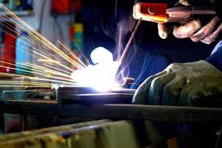

SOLDADURA SMAW
QUE ES LA SOLDADURA SMAW?
La soldadura SMAW (Shielded Metal Arc Welding), también conocida como soldadura por arco con electrodo revestido, es un proceso de soldadura en el que se utiliza un electrodo metálico recubierto para fundir y unir piezas de metal mediante un arco eléctrico.
- ¿Cómo funciona?
- Se establece un arco eléctrico entre el electrodo y la pieza de trabajo.
- El calor generado por el arco funde tanto el electrodo como el material base, formando un charco de soldadura.
- El revestimiento del electrodo se descompone por el calor, generando gases que protegen la soldadura de la contaminación del aire.
- Al enfriarse, se forma una escoria sobre la soldadura, que debe eliminarse para obtener un acabado limpio.
- - El equipo es sencillo y económico en comparación con otros procesos de soldadura.
- - Es portátil y puede utilizarse en exteriores sin necesidad de gas adicional.
- - Es compatible con una variedad de metales y permite soldar en diferentes posiciones.
- Desventajas:
- - La velocidad de deposición del material es menor en comparación con otros métodos de soldadura.
- - Se requiere una limpieza constante para eliminar la escoria que se genera.
- - La emisión de humos es mayor que en otros procesos más avanzados.
La soldadura SMAW es ampliamente utilizada en la construcción, la fabricación de estructuras metálicas y el mantenimiento de equipos, debido a su versatilidad y facilidad de uso.
PARA QUE LA EMPLEAMOS:
La soldadura por arco con electrodo revestido, conocida como SMAW (Shielded Metal Arc Welding), es un proceso ampliamente utilizado en diversas industrias debido a su versatilidad, facilidad de uso y bajo costo en comparación con otros métodos de soldadura. Su aplicación abarca desde la construcción de estructuras metálicas hasta la reparación de maquinaria, convirtiéndose en una técnica esencial para la fabricación y el mantenimiento industrial. Uno de los principales sectores en los que se emplea la soldadura SMAW es la construcción. Este proceso es ideal para la unión de vigas, columnas y otros elementos estructurales en edificaciones, puentes y otras infraestructuras. La capacidad de realizar soldaduras en diversas posiciones y en exteriores, incluso en condiciones adversas, hace que sea una opción confiable para la construcción civil y la ingeniería estructural. Otra aplicación destacada se encuentra en la industria metalúrgica y manufacturera. SMAW es ampliamente utilizado en la fabricación de equipos industriales, tuberías y estructuras metálicas diversas. Su capacidad para soldar una amplia gama de materiales, incluyendo aceros al carbono, aceros inoxidables y algunas aleaciones de hierro, la hace una opción práctica para muchas empresas. El sector de la reparación y mantenimiento también se beneficia significativamente de la soldadura SMAW. En la industria automotriz, agrícola y de maquinaria pesada, esta técnica se usa para la reparación de piezas desgastadas o dañadas, prolongando la vida útil de los equipos. Su facilidad de implementación permite realizar reparaciones en campo sin la necesidad de equipos sofisticados o de condiciones altamente controladas. En la industria naval y petrolera, la soldadura SMAW se utiliza en la construcción y reparación de embarcaciones, plataformas marítimas y tuberías de transporte de hidrocarburos. La resistencia de las uniones soldadas y la posibilidad de trabajar en entornos difíciles hacen de este proceso una opción viable para estas aplicaciones críticas. En conclusión, la soldadura SMAW es un proceso fundamental en múltiples industrias debido a su versatilidad y confiabilidad. Su capacidad para adaptarse a diversas condiciones y materiales la convierte en una herramienta indispensable para la construcción, manufactura, reparación y mantenimiento de estructuras y equipos metálicos. A pesar del avance de tecnologías de soldadura más sofisticadas, SMAW sigue siendo una técnica ampliamente utilizada gracias a su eficacia y facilidad de aplicación.
MODOS DE OSCILACION:
¿Qué es la oscilación en SMAW?
La oscilación es el movimiento lateral que realiza el soldador con el electrodo para controlar la penetración, la fusión y la forma del cordón de soldadura. Se usa especialmente en soldaduras de varias pasadas o cuando es necesario distribuir el material de aporte de manera uniforme.
(SMAW, por sus siglas en inglés) es uno de los procesos de unión de metales más utilizados en la industria. Para obtener una soldadura de calidad, es fundamental dominar técnicas como la oscilación del electrodo. La oscilación se refiere al movimiento lateral controlado del electrodo mientras se avanza en la soldadura. Este movimiento influye en la distribución del material de aporte, la penetración y la apariencia del cordón de soldadura. En este ensayo se analizarán los principales tipos de oscilación en la soldadura SMAW y sus aplicaciones.

Tipos de oscilacion
- 1.Oscilación Rectilínea o Sin Oscilación: Este es el tipo de movimiento más simple, donde el electrodo se desplaza en línea recta sin realizar movimientos laterales. Se utiliza cuando se requiere una alta penetración en materiales delgados o en pasadas de raíz. Su ventaja principal es que permite concentrar el calor en una zona específica, logrando una unión fuerte y evitando defectos como inclusiones de escoria.
- 2. Oscilación en Zigzag: En este tipo de oscilación, el electrodo se mueve de un lado a otro en forma de "Z" mientras avanza en la dirección de la soldadura. Esta técnica se emplea para mejorar la fusión de los bordes de la junta y obtener un cordón más ancho. Es común en uniones a tope y en filetes, especialmente cuando se busca evitar la falta de fusión en los bordes.
- 3. Oscilación en Círculo o Espiral: La oscilación circular consiste en mover el electrodo en pequeños círculos mientras se avanza en la soldadura. Este movimiento permite distribuir uniformemente el metal de aporte, logrando un cordón más homogéneo y evitando socavaciones. Se recomienda en materiales gruesos donde es necesario un mayor control del baño de fusión.
- 4. Oscilación en Media Luna o Semicírculos: En esta técnica, el electrodo se mueve en forma de semiluna o "U", con pausas breves en los extremos del movimiento. Se utiliza para evitar inclusiones de escoria y mejorar la penetración en los bordes de la junta. Es especialmente útil en posiciones verticales y sobrecabeza, donde el control del baño de fusión es crítico.
- 5. Oscilación en Triángulo: El movimiento triangular se caracteriza por pausas en los vértices del triángulo, lo que permite una mejor distribución del calor y del material de aporte. Se emplea en uniones con bisel y en posiciones de difícil acceso, como soldaduras en vertical ascendente. Su principal ventaja es que permite una penetración uniforme en toda la sección de la soldadura.
- 6. Oscilación en "U" o "V": Este tipo de oscilación implica un movimiento en forma de "U" o "V" con pausas en los extremos. Es muy útil en soldaduras de filete y en posiciones sobrecabeza, donde se necesita evitar defectos como la falta de fusión. También permite controlar mejor la cantidad de material depositado en cada pasada.
- Importancia de la Oscilación en SMAW: La elección del tipo de oscilación depende de varios factores, como el espesor del material, la posición de soldadura y el tipo de junta. Un mal control de la oscilación puede generar defectos como porosidad, inclusiones de escoria o falta de penetración. Por ello, el soldador debe practicar y ajustar su técnica según las condiciones específicas de cada trabajo.
- Conclusión: La oscilación en la soldadura SMAW es una técnica fundamental para lograr cordones de soldadura de alta calidad. Los distintos tipos de oscilación permiten adaptar el proceso a diferentes tipos de uniones y posiciones, garantizando una soldadura eficiente y libre de defectos. El dominio de estas técnicas es esencial para cualquier soldador que busque mejorar su desempeño y obtener resultados profesionales en su trabajo.
ELECTRODO REVESTIDO:
El electrodo revestido es un tipo de electrodo utilizado en la soldadura por arco manual con electrodo revestido (SMAW, por sus siglas en inglés). Está compuesto por un núcleo metálico y un revestimiento que lo recubre, el cual tiene funciones clave en el proceso de soldadura.
Funciones del revestimiento:
- Protección del arco y el metal fundido: Al calentarse, el revestimiento genera gases que protegen el baño de soldadura de la contaminación del oxígeno y el nitrógeno del aire.
- Formación de escoria: Al solidificarse, la escoria cubre el cordón de soldadura y lo protege de la oxidación hasta que se enfría.
- Aporte de elementos de aleación: Algunos revestimientos contienen materiales que mejoran las propiedades mecánicas del metal depositado.
- Facilitación del encendido y estabilidad del arco: Contiene compuestos que estabilizan la ionización del arco, mejorando su continuidad.
Los electrodos revestidos se clasifican según su tipo de revestimiento (celulósico, rutílico, básico, etc.) y su aplicación específica (acero al carbono, inoxidable, hierro fundido, etc.).